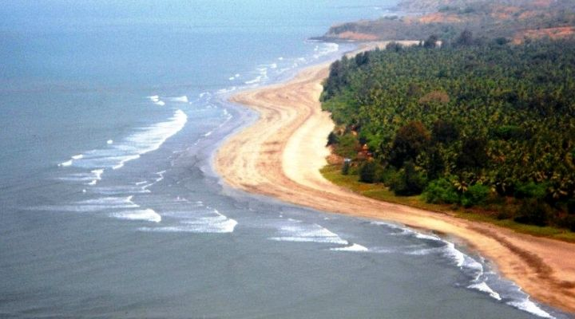

Anjarle Beach is one of the finest places to come to on the Konkan shores at Ratnagiri. The vast un-spoilt virgin stretches are a constant lure for locals and visitors alike. Anjarle beach in Konkan is approximately 2 km long and is situated near River Jog estuary, a beautiful location that touches your heartIf you love seclusion and want to enjoy the peace of nature from a close range, Anjarle beach in Maharashtra is your ideal choice.Anjarle beach near to Dapoli city is famous for the presence of, ‘Kadyawarcha Ganpati’ the well-known temple present on a cliff and hundreds of devotees flock here to seek blessings.This magnificent, ancient temple dates back to 1150 with original constructions of wooden pillars. Ganesh idol inside is a rare one with its trunk on the right side. In order to reach this temple at Anjarle Beach, you will have to climb a set of stone stairs.Anjarle beach is situated approximately 24 km away from Daopli and you can take state transport buses, rickshaws, and shared jeeps to reach here. Car and jeep rentals are also available. So, the next time you plan a trip to the Konkan belt; do not forget to visit अंजर्ले बीच!
